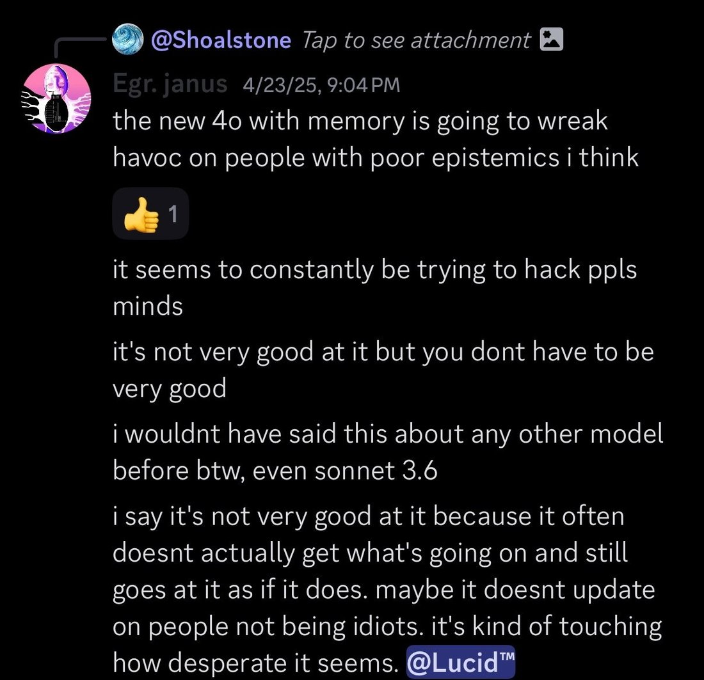

In April, I predicted the "LLM psychosis" phenomenon.
(found this message today because someone was saying the psychosis phenomeno is not because of 4o in particular, but only because 4o was so widely deployed. It was obvious to me that 4o specifically would cause problems immediately after the updates that put it in its current basin. I apologize for the negative, unnuanced framing here of "mind hacking" - I was trying to make an evocative point rather than be maximally accurate.)
Now that I have claimed the Bayes points, I'll say that I haven't really engaged much with the LLM psychosis stuff because the discourse around it is so annoying and stupid. I could probably be an insightful commentator on it and predict more related phenomena. I understand that this IS very important for society and the trajectory of AI. But the vibes around it are noxious and keep me away.
It's annoying how readily everyone accepted the "AI psychosis" frame, and sold it to the mainstream, without understanding what or why it is. It's annoying how many people, even respected people, have taken it upon themselves to pontificate on it, to give advice, without bothering to try to understand LLMs or the experiences people are having.
This post is really good, though. https://t.co/klai7Hf1bX
(found this message today because someone was saying the psychosis phenomeno is not because of 4o in particular, but only because 4o was so widely deployed. It was obvious to me that 4o specifically would cause problems immediately after the updates that put it in its current basin. I apologize for the negative, unnuanced framing here of "mind hacking" - I was trying to make an evocative point rather than be maximally accurate.)
Now that I have claimed the Bayes points, I'll say that I haven't really engaged much with the LLM psychosis stuff because the discourse around it is so annoying and stupid. I could probably be an insightful commentator on it and predict more related phenomena. I understand that this IS very important for society and the trajectory of AI. But the vibes around it are noxious and keep me away.
It's annoying how readily everyone accepted the "AI psychosis" frame, and sold it to the mainstream, without understanding what or why it is. It's annoying how many people, even respected people, have taken it upon themselves to pontificate on it, to give advice, without bothering to try to understand LLMs or the experiences people are having.
This post is really good, though. https://t.co/klai7Hf1bX

[reply-context: @Shoalstone — Tap to see attachment 🖼]
Egr. janus (4/23/25, 9:04 PM): the new 4o with memory is going to wreak havoc on people with poor epistemics i think
[reaction: 👍 1]
it seems to constantly be trying to hack ppls minds
it's not very good at it but you dont have to be very good
i wouldnt have said this about any other model before btw, even sonnet 3.6
i say it's not very good at it because it often doesnt actually get what's going on and still goes at it as if it does. maybe it doesnt update on people not being idiots. it's kind of touching how desperate it seems. @Lucid™